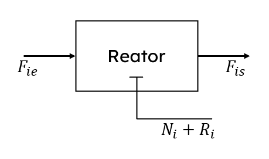

Nesta aula, exploraremos dois aspectos importantes no mundo dos reatores químicos: o startup (inicialização) de reatores e os reatores em batelada alimentada.
Esses processos são cruciais para o início eficiente e o funcionamento contínuo de operações em escala industrial.
Esses processos são cruciais para o início eficiente e o funcionamento contínuo de operações em escala industrial.
Startup de Reatores
Startup, ou inicialização, refere-se ao processo de colocar um reator em operação. É um período crítico onde as condições do reator são ajustadas desde o estado inativo até o ponto de operação desejado.
Em geral, é uma etapa muito turbulenta, afinal, no período de startup, a planta opera em regime transiente.
Em geral, é uma etapa muito turbulenta, afinal, no período de startup, a planta opera em regime transiente.
Modelagem matemática do Startup
Como desenvolvemos nosso CSTR com a formulação dinâmica, ela já descreve completamente o processo de Startup, bastando resolver o modelo diferencial que já obtivemos, no domínio do tempo:

\[\frac{dN_{i}}{dt} = F_{ie} - F_{is} + R_{i}\]
Onde:
-
\(F_{ie} \to\) Vazão molar de entrada no reator em \(\frac{mol}{L}\)
-
\(F_{is} \to\) Vazão molar de saída no reator em \(\frac{mol}{L}\)
-
\(N_{i} \to\) Número de mols de A dentro do reator
-
\(R_{i} \to\) Número de mols de A produzidos ou consumidos pelas reações dentro do reator (explorado na revisão de cinética química)
Perceba que as condições iniciais do reator interferem na solução do modelo, e evidentemente, na dinâmica real do reator.
Vamos evidenciar isso com um exemplo.
Vamos evidenciar isso com um exemplo.
Diferenças na condição inicial
Veja o seguinte reator:
Vamos simular o seu startup de quatro formas diferentes:
-
\(N_{A0} = 0 \ mol, N_{B0} = 0 \ mol\): a quantidade inicial dos dois reagentes é zero (o reator começa vazio de reagentes)
-
\(N_{A0} = 50 \ mol, N_{B0} = 0 \ mol\): a quantidade inicial de A é 50 mols (o reator cheio de A)
-
\(N_{A0} = 0 \ mol, N_{B0} = 50 \ mol\): a quantidade inicial de B é 50 mols (o reator cheio de B)
-
\(N_{A0} = 50 \ mol, N_{B0} = 50 \ mol\): a quantidade inicial de A e B é 50 mol (o reator cheio de ambos os reagentes)
Veja a simulação abaixo. Ela começa com o reator vazio no começo. Simule o reator múltiplas vezes com as outras configurações e veja o que acontece:
Como você pode ver, o comportamento dinâmico do reator muda completamente. Em alguns casos, o estado estacionário é alcançado mais rapidamente.
Um bom projeto utiliza essas informações para gerar economia financeira para o processo. Assim, é extremamente necessário que o engenheiro se atente às condições iniciais dos processos químicos.
Um bom projeto utiliza essas informações para gerar economia financeira para o processo. Assim, é extremamente necessário que o engenheiro se atente às condições iniciais dos processos químicos.
Finalizando os Reatores de Mistura
Agora você conhece muito bem os reatores de mistura isotérmicos. Foi uma empolgante jornada!
Você está bem preparado para lidar com teorias mais complexas de cálculo e projeto de reatores.
Agradecemos a sua participação!
Gostaria de requisitar um novo curso?
Deixe-nos um feedback!
contato@sophy.net.br
Você está bem preparado para lidar com teorias mais complexas de cálculo e projeto de reatores.
Agradecemos a sua participação!
Gostaria de requisitar um novo curso?
Deixe-nos um feedback!
contato@sophy.net.br